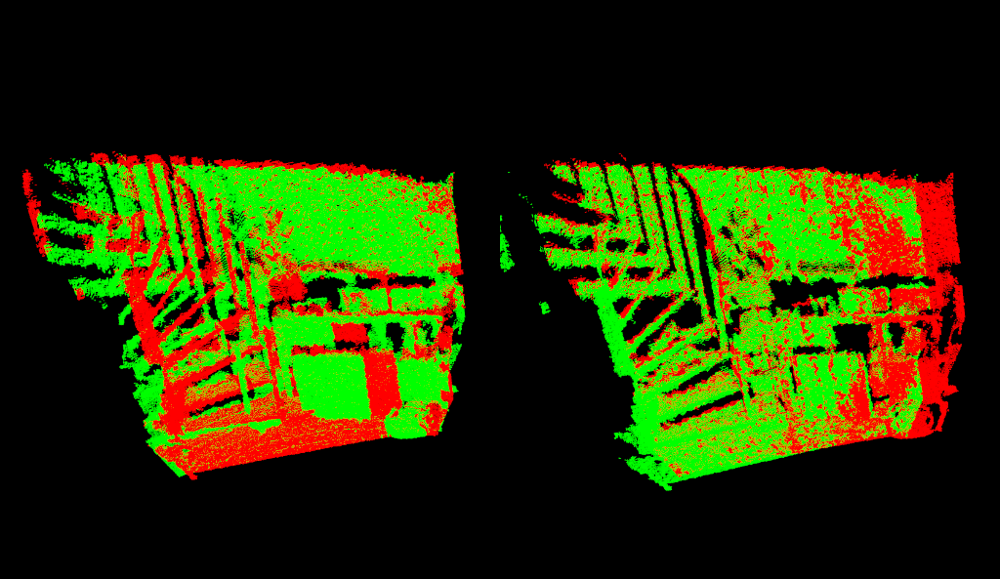
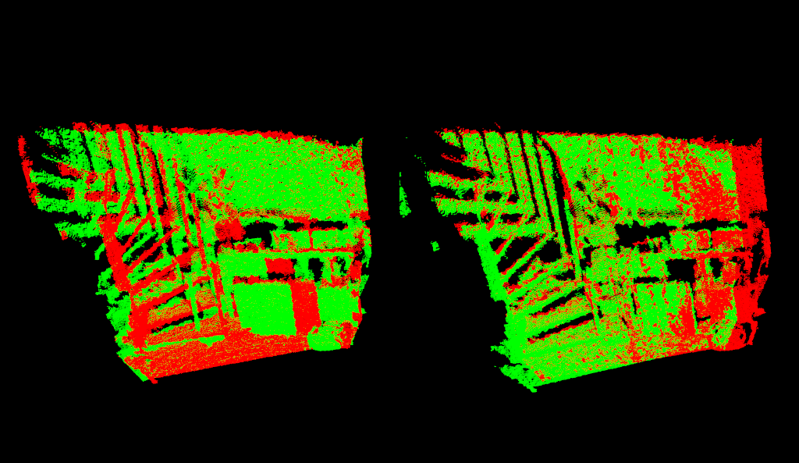

How to incrementally register pairs of clouds
This document demonstrates using the Iterative Closest Point algorithm in order to incrementally register a series of point clouds two by two.
The code
1/*
2 * Software License Agreement (BSD License)
3 *
4 * Copyright (c) 2010, Willow Garage, Inc.
5 * All rights reserved.
6 *
7 * Redistribution and use in source and binary forms, with or without
8 * modification, are permitted provided that the following conditions
9 * are met:
10 *
11 * * Redistributions of source code must retain the above copyright
12 * notice, this list of conditions and the following disclaimer.
13 * * Redistributions in binary form must reproduce the above
14 * copyright notice, this list of conditions and the following
15 * disclaimer in the documentation and/or other materials provided
16 * with the distribution.
17 * * Neither the name of Willow Garage, Inc. nor the names of its
18 * contributors may be used to endorse or promote products derived
19 * from this software without specific prior written permission.
20 *
21 * THIS SOFTWARE IS PROVIDED BY THE COPYRIGHT HOLDERS AND CONTRIBUTORS
22 * "AS IS" AND ANY EXPRESS OR IMPLIED WARRANTIES, INCLUDING, BUT NOT
23 * LIMITED TO, THE IMPLIED WARRANTIES OF MERCHANTABILITY AND FITNESS
24 * FOR A PARTICULAR PURPOSE ARE DISCLAIMED. IN NO EVENT SHALL THE
25 * COPYRIGHT OWNER OR CONTRIBUTORS BE LIABLE FOR ANY DIRECT, INDIRECT,
26 * INCIDENTAL, SPECIAL, EXEMPLARY, OR CONSEQUENTIAL DAMAGES (INCLUDING,
27 * BUT NOT LIMITED TO, PROCUREMENT OF SUBSTITUTE GOODS OR SERVICES;
28 * LOSS OF USE, DATA, OR PROFITS; OR BUSINESS INTERRUPTION) HOWEVER
29 * CAUSED AND ON ANY THEORY OF LIABILITY, WHETHER IN CONTRACT, STRICT
30 * LIABILITY, OR TORT (INCLUDING NEGLIGENCE OR OTHERWISE) ARISING IN
31 * ANY WAY OUT OF THE USE OF THIS SOFTWARE, EVEN IF ADVISED OF THE
32 * POSSIBILITY OF SUCH DAMAGE.
33 *
34 * $Id$
35 *
36 */
37
38/* \author Radu Bogdan Rusu
39 * adaptation Raphael Favier*/
40
41#include <pcl/memory.h> // for pcl::make_shared
42#include <pcl/point_types.h>
43#include <pcl/point_cloud.h>
44#include <pcl/point_representation.h>
45
46#include <pcl/io/pcd_io.h>
47
48#include <pcl/filters/voxel_grid.h>
49#include <pcl/filters/filter.h>
50
51#include <pcl/features/normal_3d.h>
52
53#include <pcl/registration/icp.h>
54#include <pcl/registration/icp_nl.h>
55#include <pcl/common/transforms.h>
56
57#include <pcl/visualization/pcl_visualizer.h>
58
59using pcl::visualization::PointCloudColorHandlerGenericField;
60using pcl::visualization::PointCloudColorHandlerCustom;
61
62//convenient typedefs
63typedef pcl::PointXYZ PointT;
64typedef pcl::PointCloud<PointT> PointCloud;
65typedef pcl::PointNormal PointNormalT;
66typedef pcl::PointCloud<PointNormalT> PointCloudWithNormals;
67
68// This is a tutorial so we can afford having global variables
69 //our visualizer
70 pcl::visualization::PCLVisualizer *p;
71 //its left and right viewports
72 int vp_1, vp_2;
73
74//convenient structure to handle our pointclouds
75struct PCD
76{
77 PointCloud::Ptr cloud;
78 std::string f_name;
79
80 PCD() : cloud (new PointCloud) {};
81};
82
83struct PCDComparator
84{
85 bool operator () (const PCD& p1, const PCD& p2)
86 {
87 return (p1.f_name < p2.f_name);
88 }
89};
90
91
92// Define a new point representation for < x, y, z, curvature >
93class MyPointRepresentation : public pcl::PointRepresentation <PointNormalT>
94{
95 using pcl::PointRepresentation<PointNormalT>::nr_dimensions_;
96public:
97 MyPointRepresentation ()
98 {
99 // Define the number of dimensions
100 nr_dimensions_ = 4;
101 }
102
103 // Override the copyToFloatArray method to define our feature vector
104 virtual void copyToFloatArray (const PointNormalT &p, float * out) const
105 {
106 // < x, y, z, curvature >
107 out[0] = p.x;
108 out[1] = p.y;
109 out[2] = p.z;
110 out[3] = p.curvature;
111 }
112};
113
114
115////////////////////////////////////////////////////////////////////////////////
116/** \brief Display source and target on the first viewport of the visualizer
117 *
118 */
119void showCloudsLeft(const PointCloud::Ptr cloud_target, const PointCloud::Ptr cloud_source)
120{
121 p->removePointCloud ("vp1_target");
122 p->removePointCloud ("vp1_source");
123
124 PointCloudColorHandlerCustom<PointT> tgt_h (cloud_target, 0, 255, 0);
125 PointCloudColorHandlerCustom<PointT> src_h (cloud_source, 255, 0, 0);
126 p->addPointCloud (cloud_target, tgt_h, "vp1_target", vp_1);
127 p->addPointCloud (cloud_source, src_h, "vp1_source", vp_1);
128
129 PCL_INFO ("Press q to begin the registration.\n");
130 p-> spin();
131}
132
133
134////////////////////////////////////////////////////////////////////////////////
135/** \brief Display source and target on the second viewport of the visualizer
136 *
137 */
138void showCloudsRight(const PointCloudWithNormals::Ptr cloud_target, const PointCloudWithNormals::Ptr cloud_source)
139{
140 p->removePointCloud ("source");
141 p->removePointCloud ("target");
142
143
144 PointCloudColorHandlerGenericField<PointNormalT> tgt_color_handler (cloud_target, "curvature");
145 if (!tgt_color_handler.isCapable ())
146 PCL_WARN ("Cannot create curvature color handler!\n");
147
148 PointCloudColorHandlerGenericField<PointNormalT> src_color_handler (cloud_source, "curvature");
149 if (!src_color_handler.isCapable ())
150 PCL_WARN ("Cannot create curvature color handler!\n");
151
152
153 p->addPointCloud (cloud_target, tgt_color_handler, "target", vp_2);
154 p->addPointCloud (cloud_source, src_color_handler, "source", vp_2);
155
156 p->spinOnce();
157}
158
159////////////////////////////////////////////////////////////////////////////////
160/** \brief Load a set of PCD files that we want to register together
161 * \param argc the number of arguments (pass from main ())
162 * \param argv the actual command line arguments (pass from main ())
163 * \param models the resultant vector of point cloud datasets
164 */
165void loadData (int argc, char **argv, std::vector<PCD, Eigen::aligned_allocator<PCD> > &models)
166{
167 std::string extension (".pcd");
168 // Suppose the first argument is the actual test model
169 for (int i = 1; i < argc; i++)
170 {
171 std::string fname = std::string (argv[i]);
172 // Needs to be at least 5: .plot
173 if (fname.size () <= extension.size ())
174 continue;
175
176 std::transform (fname.begin (), fname.end (), fname.begin (), (int(*)(int))tolower);
177
178 //check that the argument is a pcd file
179 if (fname.compare (fname.size () - extension.size (), extension.size (), extension) == 0)
180 {
181 // Load the cloud and saves it into the global list of models
182 PCD m;
183 m.f_name = argv[i];
184 pcl::io::loadPCDFile (argv[i], *m.cloud);
185 //remove NAN points from the cloud
186 std::vector<int> indices;
187 pcl::removeNaNFromPointCloud(*m.cloud,*m.cloud, indices);
188
189 models.push_back (m);
190 }
191 }
192}
193
194
195////////////////////////////////////////////////////////////////////////////////
196/** \brief Align a pair of PointCloud datasets and return the result
197 * \param cloud_src the source PointCloud
198 * \param cloud_tgt the target PointCloud
199 * \param output the resultant aligned source PointCloud
200 * \param final_transform the resultant transform between source and target
201 */
202void pairAlign (const PointCloud::Ptr cloud_src, const PointCloud::Ptr cloud_tgt, PointCloud::Ptr output, Eigen::Matrix4f &final_transform, bool downsample = false)
203{
204 //
205 // Downsample for consistency and speed
206 // \note enable this for large datasets
207 PointCloud::Ptr src (new PointCloud);
208 PointCloud::Ptr tgt (new PointCloud);
209 pcl::VoxelGrid<PointT> grid;
210 if (downsample)
211 {
212 grid.setLeafSize (0.05, 0.05, 0.05);
213 grid.setInputCloud (cloud_src);
214 grid.filter (*src);
215
216 grid.setInputCloud (cloud_tgt);
217 grid.filter (*tgt);
218 }
219 else
220 {
221 src = cloud_src;
222 tgt = cloud_tgt;
223 }
224
225
226 // Compute surface normals and curvature
227 PointCloudWithNormals::Ptr points_with_normals_src (new PointCloudWithNormals);
228 PointCloudWithNormals::Ptr points_with_normals_tgt (new PointCloudWithNormals);
229
230 pcl::NormalEstimation<PointT, PointNormalT> norm_est;
231 pcl::search::KdTree<pcl::PointXYZ>::Ptr tree (new pcl::search::KdTree<pcl::PointXYZ> ());
232 norm_est.setSearchMethod (tree);
233 norm_est.setKSearch (30);
234
235 norm_est.setInputCloud (src);
236 norm_est.compute (*points_with_normals_src);
237 pcl::copyPointCloud (*src, *points_with_normals_src);
238
239 norm_est.setInputCloud (tgt);
240 norm_est.compute (*points_with_normals_tgt);
241 pcl::copyPointCloud (*tgt, *points_with_normals_tgt);
242
243 //
244 // Instantiate our custom point representation (defined above) ...
245 MyPointRepresentation point_representation;
246 // ... and weight the 'curvature' dimension so that it is balanced against x, y, and z
247 float alpha[4] = {1.0, 1.0, 1.0, 1.0};
248 point_representation.setRescaleValues (alpha);
249
250 //
251 // Align
252 pcl::IterativeClosestPointNonLinear<PointNormalT, PointNormalT> reg;
253 reg.setTransformationEpsilon (1e-6);
254 // Set the maximum distance between two correspondences (src<->tgt) to 10cm
255 // Note: adjust this based on the size of your datasets
256 reg.setMaxCorrespondenceDistance (0.1);
257 // Set the point representation
258 reg.setPointRepresentation (pcl::make_shared<const MyPointRepresentation> (point_representation));
259
260 reg.setInputSource (points_with_normals_src);
261 reg.setInputTarget (points_with_normals_tgt);
262
263
264
265 //
266 // Run the same optimization in a loop and visualize the results
267 Eigen::Matrix4f Ti = Eigen::Matrix4f::Identity (), prev, targetToSource;
268 PointCloudWithNormals::Ptr reg_result = points_with_normals_src;
269 reg.setMaximumIterations (2);
270 for (int i = 0; i < 30; ++i)
271 {
272 PCL_INFO ("Iteration Nr. %d.\n", i);
273
274 // save cloud for visualization purpose
275 points_with_normals_src = reg_result;
276
277 // Estimate
278 reg.setInputSource (points_with_normals_src);
279 reg.align (*reg_result);
280
281 //accumulate transformation between each Iteration
282 Ti = reg.getFinalTransformation () * Ti;
283
284 //if the difference between this transformation and the previous one
285 //is smaller than the threshold, refine the process by reducing
286 //the maximal correspondence distance
287 if (std::abs ((reg.getLastIncrementalTransformation () - prev).sum ()) < reg.getTransformationEpsilon ())
288 reg.setMaxCorrespondenceDistance (reg.getMaxCorrespondenceDistance () - 0.001);
289
290 prev = reg.getLastIncrementalTransformation ();
291
292 // visualize current state
293 showCloudsRight(points_with_normals_tgt, points_with_normals_src);
294 }
295
296 //
297 // Get the transformation from target to source
298 targetToSource = Ti.inverse();
299
300 //
301 // Transform target back in source frame
302 pcl::transformPointCloud (*cloud_tgt, *output, targetToSource);
303
304 p->removePointCloud ("source");
305 p->removePointCloud ("target");
306
307 PointCloudColorHandlerCustom<PointT> cloud_tgt_h (output, 0, 255, 0);
308 PointCloudColorHandlerCustom<PointT> cloud_src_h (cloud_src, 255, 0, 0);
309 p->addPointCloud (output, cloud_tgt_h, "target", vp_2);
310 p->addPointCloud (cloud_src, cloud_src_h, "source", vp_2);
311
312 PCL_INFO ("Press q to continue the registration.\n");
313 p->spin ();
314
315 p->removePointCloud ("source");
316 p->removePointCloud ("target");
317
318 //add the source to the transformed target
319 *output += *cloud_src;
320
321 final_transform = targetToSource;
322 }
323
324
325/* ---[ */
326int main (int argc, char** argv)
327{
328 // Load data
329 std::vector<PCD, Eigen::aligned_allocator<PCD> > data;
330 loadData (argc, argv, data);
331
332 // Check user input
333 if (data.empty ())
334 {
335 PCL_ERROR ("Syntax is: %s <source.pcd> <target.pcd> [*]\n", argv[0]);
336 PCL_ERROR ("[*] - multiple files can be added. The registration results of (i, i+1) will be registered against (i+2), etc\n");
337 return (-1);
338 }
339 PCL_INFO ("Loaded %d datasets.\n", (int)data.size ());
340
341 // Create a PCLVisualizer object
342 p = new pcl::visualization::PCLVisualizer (argc, argv, "Pairwise Incremental Registration example");
343 p->createViewPort (0.0, 0, 0.5, 1.0, vp_1);
344 p->createViewPort (0.5, 0, 1.0, 1.0, vp_2);
345
346 PointCloud::Ptr result (new PointCloud), source, target;
347 Eigen::Matrix4f GlobalTransform = Eigen::Matrix4f::Identity (), pairTransform;
348
349 for (std::size_t i = 1; i < data.size (); ++i)
350 {
351 source = data[i-1].cloud;
352 target = data[i].cloud;
353
354 // Add visualization data
355 showCloudsLeft(source, target);
356
357 PointCloud::Ptr temp (new PointCloud);
358 PCL_INFO ("Aligning %s (%zu) with %s (%zu).\n", data[i-1].f_name.c_str (), static_cast<std::size_t>(source->size ()), data[i].f_name.c_str (), static_cast<std::size_t>(target->size ()));
359 pairAlign (source, target, temp, pairTransform, true);
360
361 //transform current pair into the global transform
362 pcl::transformPointCloud (*temp, *result, GlobalTransform);
363
364 //update the global transform
365 GlobalTransform *= pairTransform;
366
367 //save aligned pair, transformed into the first cloud's frame
368 std::stringstream ss;
369 ss << i << ".pcd";
370 pcl::io::savePCDFile (ss.str (), *result, true);
371
372 }
373}
374/* ]--- */
The explanation
Declarations
These are the header files that contain the definitions for all of the classes which we will use.
#include <pcl/memory.h> // for pcl::make_shared
#include <pcl/point_types.h>
#include <pcl/point_cloud.h>
#include <pcl/point_representation.h>
#include <pcl/io/pcd_io.h>
#include <pcl/filters/voxel_grid.h>
#include <pcl/filters/filter.h>
#include <pcl/features/normal_3d.h>
#include <pcl/registration/icp.h>
#include <pcl/registration/icp_nl.h>
#include <pcl/common/transforms.h>
#include <pcl/visualization/pcl_visualizer.h>
Creates global variables for visualization purpose
// This is a tutorial so we can afford having global variables
//our visualizer
pcl::visualization::PCLVisualizer *p;
//its left and right viewports
int vp_1, vp_2;
Declare a convenient structure that allow us to handle clouds as couple [points - filename]
struct PCD
{
PointCloud::Ptr cloud;
std::string f_name;
PCD() : cloud (new PointCloud) {};
};
Define a new point representation (see Adding your own custom PointT type for more on the subject)
// Define a new point representation for < x, y, z, curvature >
class MyPointRepresentation : public pcl::PointRepresentation <PointNormalT>
{
using pcl::PointRepresentation<PointNormalT>::nr_dimensions_;
public:
MyPointRepresentation ()
{
// Define the number of dimensions
nr_dimensions_ = 4;
}
// Override the copyToFloatArray method to define our feature vector
virtual void copyToFloatArray (const PointNormalT &p, float * out) const
{
// < x, y, z, curvature >
out[0] = p.x;
out[1] = p.y;
out[2] = p.z;
out[3] = p.curvature;
}
};
Registering functions
Let’s see how are our functions organized.
int main (int argc, char** argv)
{
// Load data
std::vector<PCD, Eigen::aligned_allocator<PCD> > data;
loadData (argc, argv, data);
// Check user input
if (data.empty ())
{
PCL_ERROR ("Syntax is: %s <source.pcd> <target.pcd> [*]\n", argv[0]);
PCL_ERROR ("[*] - multiple files can be added. The registration results of (i, i+1) will be registered against (i+2), etc\n");
return (-1);
}
PCL_INFO ("Loaded %d datasets.\n", (int)data.size ());
// Create a PCLVisualizer object
p = new pcl::visualization::PCLVisualizer (argc, argv, "Pairwise Incremental Registration example");
p->createViewPort (0.0, 0, 0.5, 1.0, vp_1);
p->createViewPort (0.5, 0, 1.0, 1.0, vp_2);
PointCloud::Ptr result (new PointCloud), source, target;
Eigen::Matrix4f GlobalTransform = Eigen::Matrix4f::Identity (), pairTransform;
for (std::size_t i = 1; i < data.size (); ++i)
{
source = data[i-1].cloud;
target = data[i].cloud;
// Add visualization data
showCloudsLeft(source, target);
PointCloud::Ptr temp (new PointCloud);
PCL_INFO ("Aligning %s (%zu) with %s (%zu).\n", data[i-1].f_name.c_str (), static_cast<std::size_t>(source->size ()), data[i].f_name.c_str (), static_cast<std::size_t>(target->size ()));
pairAlign (source, target, temp, pairTransform, true);
//transform current pair into the global transform
pcl::transformPointCloud (*temp, *result, GlobalTransform);
//update the global transform
GlobalTransform *= pairTransform;
//save aligned pair, transformed into the first cloud's frame
std::stringstream ss;
ss << i << ".pcd";
pcl::io::savePCDFile (ss.str (), *result, true);
}
}
/* ]--- */
void loadData (int argc, char **argv, std::vector<PCD, Eigen::aligned_allocator<PCD> > &models)
{
std::string extension (".pcd");
// Suppose the first argument is the actual test model
for (int i = 1; i < argc; i++)
{
std::string fname = std::string (argv[i]);
// Needs to be at least 5: .plot
if (fname.size () <= extension.size ())
continue;
std::transform (fname.begin (), fname.end (), fname.begin (), (int(*)(int))tolower);
//check that the argument is a pcd file
if (fname.compare (fname.size () - extension.size (), extension.size (), extension) == 0)
{
// Load the cloud and saves it into the global list of models
PCD m;
m.f_name = argv[i];
pcl::io::loadPCDFile (argv[i], *m.cloud);
//remove NAN points from the cloud
std::vector<int> indices;
pcl::removeNaNFromPointCloud(*m.cloud,*m.cloud, indices);
models.push_back (m);
}
}
}
We now arrive to the actual pair registration.
void pairAlign (const PointCloud::Ptr cloud_src, const PointCloud::Ptr cloud_tgt, PointCloud::Ptr output, Eigen::Matrix4f &final_transform, bool downsample = false)
// Align pcl::IterativeClosestPointNonLinear<PointNormalT, PointNormalT> reg; reg.setTransformationEpsilon (1e-6); // Set the maximum distance between two correspondences (src<->tgt) to 10cm // Note: adjust this based on the size of your datasets reg.setMaxCorrespondenceDistance (0.1); // Set the point representation reg.setPointRepresentation (boost::make_shared<const MyPointRepresentation> (point_representation)); reg.setInputCloud (points_with_normals_src); reg.setInputTarget (points_with_normals_tgt);
reg.setMaximumIterations (2);
And is manually iterated (30 times in our case):
for (int i = 0; i < 30; ++i) { [...] points_with_normals_src = reg_result; // Estimate reg.setInputCloud (points_with_normals_src); reg.align (*reg_result); [...] }
During each iteration, we keep track of and accumulate the transformations returned by the ICP:
Eigen::Matrix4f Ti = Eigen::Matrix4f::Identity (), prev, targetToSource; [...] for (int i = 0; i < 30; ++i) { [...] Ti = reg.getFinalTransformation () * Ti; [...] }
for (int i = 0; i < 30; ++i) { [...] if (std::abs ((reg.getLastIncrementalTransformation () - prev).sum ()) < reg.getTransformationEpsilon ()) reg.setMaxCorrespondenceDistance (reg.getMaxCorrespondenceDistance () - 0.001); prev = reg.getLastIncrementalTransformation (); [...] }
// // Get the transformation from target to source targetToSource = Ti.inverse(); // // Transform target back in source frame pcl::transformPointCloud (*cloud_tgt, *output, targetToSource); [...] *output += *cloud_tgt; final_transform = targetToSource;
Compiling and running the program
Create a file named pairwise_incremental_registration.cpp and paste the full code in it.
Create CMakeLists.txt file and add the following line in it:
1cmake_minimum_required(VERSION 3.5 FATAL_ERROR)
2
3project(tuto-pairwise)
4
5find_package(PCL 1.4 REQUIRED)
6
7include_directories(${PCL_INCLUDE_DIRS})
8link_directories(${PCL_LIBRARY_DIRS})
9add_definitions(${PCL_DEFINITIONS})
10
11add_executable (pairwise_incremental_registration pairwise_incremental_registration.cpp)
12target_link_libraries (pairwise_incremental_registration ${PCL_LIBRARIES})
Copy the files from github.com/PointCloudLibrary/data/tree/master/tutorials/pairwise in your working folder.
After you have made the executable (cmake ., make), you can run it. Simply do:
$ ./pairwise_incremental_registration capture000[1-5].pcd
You will see something similar to:

 

{kind=link}
Visualize the final results by running:
$ pcl_viewer 1.pcd 2.pcd 3.pcd 4.pcd
{kind=link}
{kind=link}
NOTE: if you only see a black screen in your viewer, try adjusting the camera position with your mouse. This may happen with the sample PCD files of this tutorial.